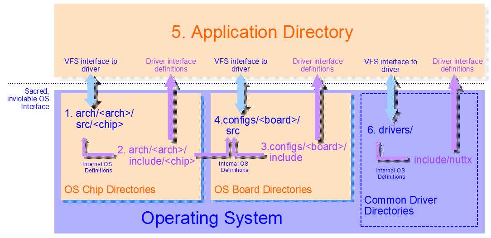

Platform Directories
Warning
Migrated from: https://cwiki.apache.org/confluence/display/NUTTX/Platform+Directories
Let’s assume that you are not change the OS itself but want to implement or extend platform-specific code.In this case, there are six, maybe seven, places where you can provide the platform code.
REVISIT: This is a out of date. There has been a recent reorganization
of the board-related directories: The configs/ directory has been
renamed boards/ and structure under the new boards/ directory is
significantly different. A <board> directory would now be found
at boards/<arch>/<chip>/<board>. Conceptually the figure is correct,
just not consistent with current naming.
Each directory has slightly different properties and are discussed in more detail below where:
<arch> represents the chip architecture that you are using. As examples, <arch> might represent
armormips.<chip> represents the specific chip family that you are using. As examples, <chip> might mean
stm32orefm32<board> represents the specific board that you are using. As examples, <board> might be
stm32f4discoveryordk-tm4c129x
1. arch/<arch>/src/<chip>
The arch/<arch>/src/<chip> directory should hold all chip related
logic. Almost all chip-specific header files should reside here
too. That includes device-related header files. GPIO header
files, for example, go here and no where else.
2. arch/<arch>/include/<chip>
The intent of the arch/<arch>/include/<chip> directory is to
hold driver-related definitions needed by application in order
to access drivers registered by the chip-specific logic in the
arch/<arch>/src/<chip> directory. This would include things like:
The IOCTL cmds that would be used with the driver
ioctl()interfaces calls,Structure definitions of parameters passed with IOCTL cmds, and
Structure definitions of binary data that might be transferred via the driver
read()orwrite()methods.
The arch/<arch>/include/<chip> directory is not currently used
properly for most of the definitions you will find there. Most
of the definitions in these header files really belong in the
arch/<arch>/src/<chip> directory but are here for historical
reasons only at this point.
The difference between header files in arch/<arch>/include/<chip>
directory and the header files in arch/<arch>/src/<chip> directory
is that the former can be included by applications using the
include path:
#include <arch/chip/someheader.h>
The header files in arch/<arch>/src/<chip> cannot be used by
applications. Those header flies can and only be used in the
arch/<arch>/src/<chip> and in the configs/<board> directories.
The header files in this directory MUST NOT introduce ad hoc non-standard function call interfaces between the application and the OS. The OS interfaces are highly controlled and not subject to ad hoc extension.
The NuttX build system enforces this and I do everything that I can to restrict usage of all chip specific facilities to those directories. In reality you are free, of course, to subvert that intent in any way you please for your personal project; but any subversion of that intent will not not be committed into the upstream NuttX repository.
3. configs/<board>/include
The configs/<board>/include directory is the moral equivalent of the
arch/<arch>/include/<chip> directory for boards: The
arch/<arch>/include/<chip> directory holds chip-specific
definitions that are accessible all logic (event even application code).
Similarly the configs/<board>/include directory holds board-specific
definitions that are accessible even to applications code. And the
same kinds of driver interfacing data should appear in these
files (see the list above).
Similarly, the intent of the configs/<board>/include directory
is to hold driver-related definitions needed by application in
order to access drivers registered by the board-specific logic
in the configs/<board>/src directory. The header files in the
configs/<board>/include directory can be included using this
include path:
#include <arch/board/someheader.h>
The header files in this directory MUST NOT introduce ad hoc non-standard function call interfaces between the application and the OS. The OS interfaces are highly controlled and not subject to ad hoc extension.
4. configs/<board>/src
All of your board-specific initialization logic and all of the
custom board device driver logic should go either in a built-in
configs/<board>/src directory or in an external, custom board
directory. These board directories are where all of your
board-specific, hardware interfacing work should be done.
As a minimum, a built-in board directory must contain
these files/directories at a minimum:
Kconfigto include the custom board configuration options into the NuttX configuration system.src/Makefilecontains the custom board build logicinclude/board.hprovides board-specific information needed by the system
Most people will eventually want to create their own custom board
directory. If you do make menuconfig you will find under the board
menu that you can enable and configure a custom board directory.
One of these configuration options is the path to your custom
board directory. That is where you will want to implement all
of your product-specific device driver logic. As a minimum,
your custom board directory must contain these files/directories at a minimum:
src/Makefilecontains the custom board build logicinclude/board.hprovides board-specific information needed by the system
NOTE: That the configuration definition file, Kconfig, is not
currently supported in the custom board configuration directory.
Within either type of board/src directory you will have
free access to all of the header files in the whole system,
including even those in the arch/<arch>/src/<chip> directory.
There are no limitations whatsoever; All include paths are supported.
5. Application Directory
There are many ways to implement your application build. How you do that is not really a part of NuttX and the topic is beyond the scope of this Wiki page. The NuttX apps package does provide one example of an application directory you may choose to use – or not. That apps/ directory is intended to provide you with some guidance. But if you search the messages in the forum, you can get lots of other ideas how to structure the application build.
The application logic can include header files from
arch/<arch>/include/<chip> directory or from the
configs/<board>/include directory for sole purpose
of support standard driver interfacing. The header
files in this directories must not introduce
uncontrolled, ad hoc interfaces into the operating system.
In the application directory, you cannot include header files
from either the arch/<arch>/src/<chip> directory or the
configs/<board>/src directory. That is an intentional
restriction that I try to enforce in order to support the
NuttX model for the segregation of functionality. But again,
you can always subvert that in your own repository as you
like. There should be no device level code in your application.
There should be no need to access GPIOs or registers or
anything like that. That all should be done in the chip
directory or in your board directory.
The model I advocate is to create and register standard device
drivers in your configs/<board>/src or custom board directory,
then you can access the device in your application directory
using the standard open() / close() / read() / write()
functions.
But I am all about freedom. Please do things exactly how you want to do them. Make sure the project meets all of your needs first; do things as you like. But, of course, I cannot commit anything upstream that does not conform to these architectural rules.
6. drivers/
Above I said that all of the devices drivers for the board-specific
resources should go in your configs/<board>/src directory. However
if your board is loaded with standard external parts that require
device drivers – such as an lcd, a touchscreen, serial FLASH,
accelerometers, etc. – then you will want to re-use or implement
standard drivers for these parts that can be shared by different
boards. In that case the drivers/ directory is the correct place
for those implementations. Header files associated with these
common drivers would go in the appropriate place under include/nuttx/.
7. apps/platform/<board> (maybe)
A final place where you can put application specific data is the
apps/platform/<board> directory. This is really part of 5.
Application Directory if you are using the NuttX apps/ package.
But since it has a slightly different purpose, it is worth
discussing separately.
The apps/platform/ directory structure is very similar to the
nuttx/configs/ directory with one directory per board. At
context create time, a symbolic link at apps/platform/board
is set up to link to the board-specific directory in
apps/platform/<board>.
The apps/platform/<board> directory is where board-specific
application logic could be placed. This directory is not often
used. In the normal flat Nuttx build, there is really not much
difference between the nuttx/configs/<board> board directory
and the apps/platform/<board> board directory. Hence the
former is normally sufficient.
The fundamental difference between the two board directories
is that the nuttx/configs/<board> board directory is inside
the operating system while the apps/platform/<board> directory
is outside of the operating system. This distinction does not
mean very much in the flat build (CONFIG_BUILD_FLAT) because
nothing enforces inside-ness or outside-ness in that case.
But the distinction is very important in protected builds
(CONFIG_BUILD_PROTECTED) and kernel builds
(CONFIG_BUILD_KERNEL) because the code operating
inside the OS is privileged, kernel-mode logic;
the code outside of the OS, on the other hand,
is unprivileged, user-mode code. The two cannot be intermixed.